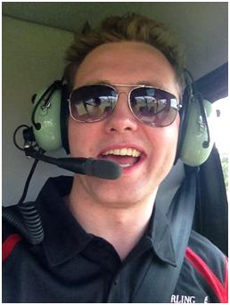

 Thomas Nelson Stirling, class of 2010, graduated UVM with a minor in Economics and a degree in Computer Science and Information Systems (CSIS), a unique major representing the marriage of computer technology and business.
During his tenure as an undergraduate, Thomas undertook several academic projects to develop his skill set and complement his learning. He worked with Professor Jackie Redmond on iPhone-application programming, specifically on early development of the iUVM app. In addition, he was a teaching assistant for a Java Programming class. Thomas also undertook an independent study in robotics, as well as one with the Fletcher Allen Medical Campus working on coding a program that scored surveys from chronic pain victims and then analyzed the data to evaluate the patients' ongoing progress. As a member of the business school he was an integral part of several clubs, including The Management Information Systems business club, serving as treasure his junior year and president of the during his senior year.
Thomas, a well-respected athlete in his hometown of Winchester, MA, co-founded the UVM Wrestling Club and was, and continues to be, an avid snowboarder. He also led an active life, enjoying hiking, biking and running.
In his senior year, Thomas founded his company, Stirling Technologies, from the comfort of his Main Street apartment. What started as a one-man web design and tech support operation has since turned into a full-service web development firm, currently located in his hometown of Winchester. Stirling Technologies develops websites, and web and mobile applications for the emerging web, and serves a range of clients from all industries and backgrounds-for example: alarm companies, school departments, real estate development companies, start-ups, lawyers and solo entrepreneurs.
Thomas' savvy business skills and charismatic demeanor, combined with his passion for and knowledge of technology, have been paramount to his success thus far. Because of the sustained growth of Stirling Technologies' since its founding, Thomas is confident that his company will continue to flourish and attract more and more clients looking for a custom and personable approach to their web project.
It is in large part to the University of Vermont, and the excellent education and experience it provided, that Thomas has been able to start and grow his own company; and he looks back fondly on the time he spent in the Green Mountains and the many friends he made.